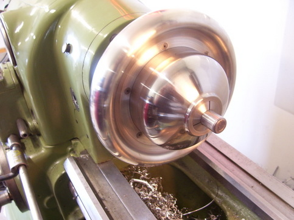
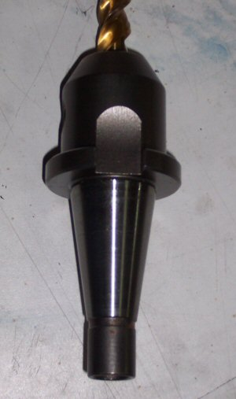
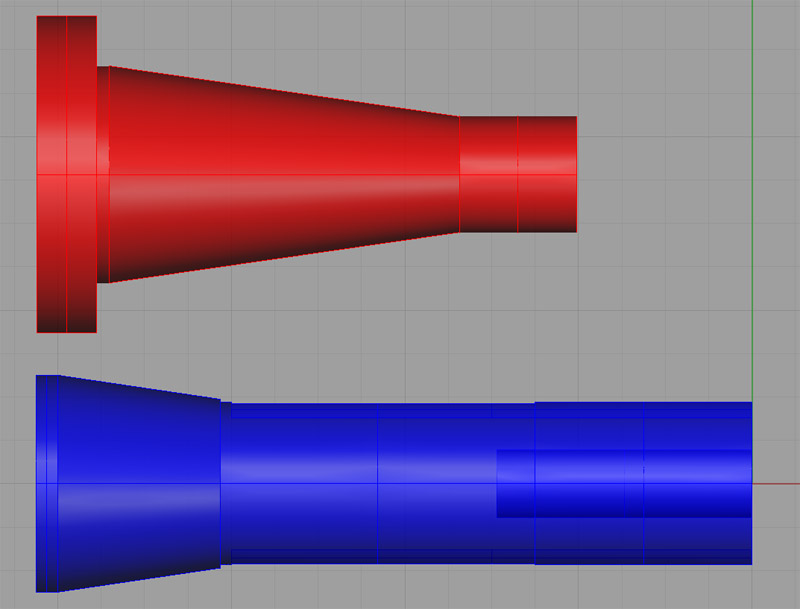
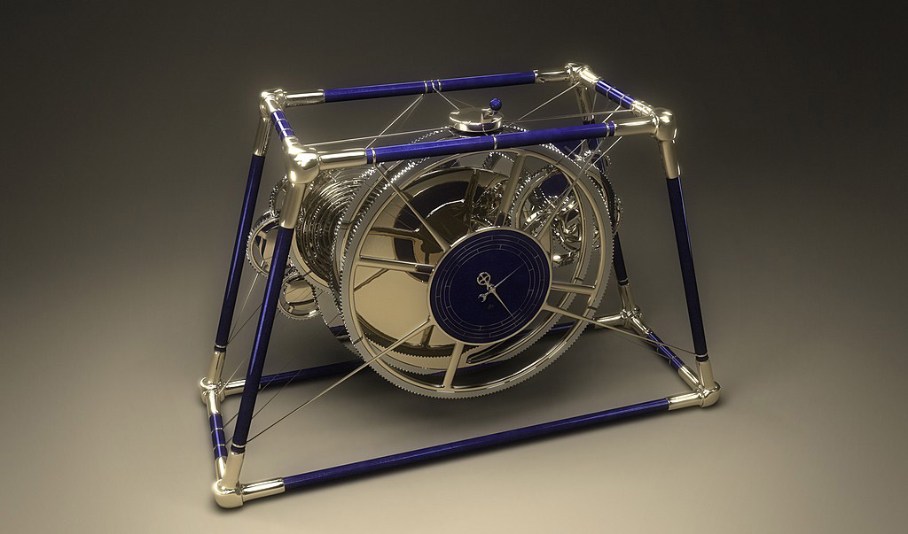

Wish
List and Future Big Projects
The
best hobbies are impossible to "finish". There is always something
more you'd like to beg, buy, borrow, build, or steal! Here is a list of
projects and products I'd like to someday add to my shop. These are the
"big" projects, meaning they are more ambitious, harder to do,
and will take longer. There is also a page
of smaller projects and a page for
Engine Projects.
High Resolution 3D Printer
|
Now that's High Resolution!
At some point, I want to put together a 3D printer. While the FFF (Fused Filament Fabrication) printers are cheap and cool, I'm captivated by the High Resolution 3D Printers. They work by using a DLP projector to shine light on a resin that is cured by the light. The results are amazing as one look at the Eiffel tower shows. They're not incredibly difficult to build, although they are much less common than the FFF/Reprap style printers. Also, the resin is a tad on the expensive side.
I've created a High Resolution 3D Printer Idea Notebook to gather ideas and notes about them.
|
|
Custom
Mauser Rifle
|
It's my plan in the relatively
near future to build a pair of custom Mauser actioned rifles. A
friend of the family got interested in doing this, and we decided
to all work together. I'm going to build two and give one to my
son. In fact, I'm hoping he'll help out. I haven't gotten far, so
the project is still on the Wish List page. However, I did try my
hand at designing a gun stock for
the rifles in Rhino 3D:
|
|
Collet Chuck
Made from Automatic Transmission Planetary Gear Set
|
From the category of Amazing Stuff, I present this 5C
collet chuck that a fellow from Practical Machinist named "j
king" made. It uses a planetary gearset from a transmission
to gear down the handwheel in a compact way and tighten the thread
on the collet. The handwheel is nicer than the keyed 5C chuck I've
got (and which I still need to make a backplate for!). Other detail
notes: there is an O-ring to keep the handwheel from rattling, and
there is a sleeve pressed into the small gear. Since the transmission
gears are hardened, the sleeve was necessary to allow threading
for the 5C collet. It is brazed into place. The workmanship and
sheer beauty of it is amazing:
The component parts. Note there is a gear
barely visible in the righthand part, and the little gear in the
middle is threaded for the 5C collet...
Here is a better view of the gear mounted
in the chuck...
The D1-3 backplate, also a beauty...
Handwheel looks CNC'd, but was done manually...
Threaded for the 5C collet...
Thrust bearing inside to keep from over tightening...

Here it is assembled and ready for use...
Looks like he's using that thing on a Monarch 10EE
lathe, another really nice piece of work.
I purchased a gearset on eBay and am awaiting a time
to get my own chuck made.
|
Texas Smoker
|
This is more of a big fabrication project than a machining project, but it is metal and it is near and dear to my heart:

Check out my project page for the Texas Smoker... |
|
High Speed NMTB
30 Spindle for the IH Mill
|
As part of Industrial Hobbies going out
of business sale, I had the opportunity to purchase a #30 taper
spindle that fits the mill for $65. The recommended angular contact
bearings to go with the spindle were another $100 from McMaster-Carr.
I like the idea of the #30 taper for a variety of reasons including:
- Greater Rigidity than R8
- Faster tool changes due to better ejection and
less fooling around to line up the drive pin of the R8. The #30
taper uses a couple of big dogs to drive the toolholder that are
real easy to see and line up compared to the hidden and fairly small
drive pin of an R8.
- Greater potential to create an automatic toolchanger
for the mill. A #30 taper and a powered drawbar can act as a toolchanger
under CNC control if you simply provide a tray of tools in fixed
positions on the table.
Perhaps the biggest reason, however, was my desire
to convert my mill spindle to run at higher speeds using a belt
drive. Out of the box it maxes out at 1600 rpm. With a bigger motor,
you can run it to 3200 rpm. That's still pretty slow when you're
trying to cut aluminum. My copy of ME Pro wants to see 3900 rpm
on a 1/2" end mill with aluminum, and this jumps to 9200 rpm
with a 1/8" end mill that I might use for fine profiling. I
don't even want to talk about what's need to do engraving!
Given how slowly most of my projects proceed,
I decided that buying one of these spindles from IH and building
a whole new belt driven mill head around it was likely to be a better
approach than trying to modify the gear head. Taking the latter
course would very likely leave me stranded without a working mill
for a long time, with much assembly/disassembly back and forthing
until I got it right. Building a separate head just requires me
to build a box that is rigid and allows me to properly mount the
spindle bearings and the motor, with a timing belt from one to the
other. I would dispense with a quill altogether as this head is
intended for CNC use and dropping the quill would allow me to make
everything that much more rigid and accurate as well as simpler.
At least that's the theory!




Comparison of a #30 taper
holder and an R8...
|
|
Antikythera Mechanism
|
I've always had a great
interest in Astronomy, and I read
with great interest recent articles about the Antikythera
Mechanism, which was apparently an ancient orrery or simulator
of motions of the heavenly bodies. The machine, which was constructed
circa 80 BC, could represent the motions of most heavenly bodies
known in its time using a clockwork consisting of 37 gears. Such
a device seems far more intriguing to me than simply making a clock.
Here is one fairly fanciful
3D representation of a modern equivalent to the Antikythera Mechanism:

|
|
|
|
|
|
Lathe Shaper
Attachment
|
Cutting keyways is painful
if your only approach is racking the cross slide back and forth
by hand. It would be awesome to build a shaper attachment that fits
a QCTP for doing lightweight keyway cutting under power. Here is
a pneumatic unit one fellow (Evan Williams from HSM board) is designing
for the purpose:
And here is his hand powered slotter:
I did order
a "left-handed Veeblefetzer" off the web that I think
could serve as a component for a shaper attachment:
The
left-handed Veeblefetzer...
I'm thinking
I'll build a manual shaper attachment first, and worry about a power
unit later.
Here is a clever design for a slotter
that just moves the compound on its dovetail:
The round "faceplate"
is being used as a dividing head to allow broaching an internal
gear on a Wankel motor project...
Dividing head is indexed
via the pin that is on the follower rest mounts...
Related Links:
http://www.lathes.co.uk/adeptshaper/index.html:
They used to make these!
http://www.duwaynesplace.com/hand_shaper_project.html
|
|
|
4th CNC Axis
for the Mill
|
As I write this, I do
not yet have my mill converted to
CNC, but the ambition quickly gets ahead of the means to deliver.
The photo shows the components of a stepper motor conversion of
a rotary table. Lots of clever ideas there:
The cylinder has a "tophat
flange" that catches on a groove cut in the square NEMA plate
for the motor. In effect, the motor's flange sandwiches the square
flange with the cylinder bringing it all together neatly. The other
clever move was to machine the shaft adapter so it can serve as
one half of an Oldham-style coupler. This was a really nicely done
conversion.
|
|
|
Toolpost Grinder
|
There have been several times when I've wished for a toolpost grinder
to finish a shaft just right and to close tolerances. I debate whether
to buy a used Dumore or Themac on eBay or try to fabricate one as
a project. Simple ones are really easy to make and just involve
lashing a suitable Dremel or hand grinder to the post in some way.
More complex versions involve fabricating a spindle and replicating
the style of the commercial TP grinders. I am really tempted to
work on a spindle for one. It would be a good warmup should I ever
choose to make a more ambitious spindle, perhaps for a lathe or
a mill.
Toolpost Grinder Project Page (Just
More Ideas and Pictures for Now)!
Router-based TP Grinder: A Bit Heavier Duty!
|
|
|
Restore a
Surface Grinder
|
In the fullness of time, I'd like to restore Blanch, my baby Blanchard-style surface grinder to full operating condition.
|
|
Souping Up a
Drill Press
|
The lowly drill press is a handy gadget, but mine could use some
help. Here is a whole page of ideas for
souping it up.
|


Check out G-Wizard, our time-saving software for Machinists...
|

|
|
|